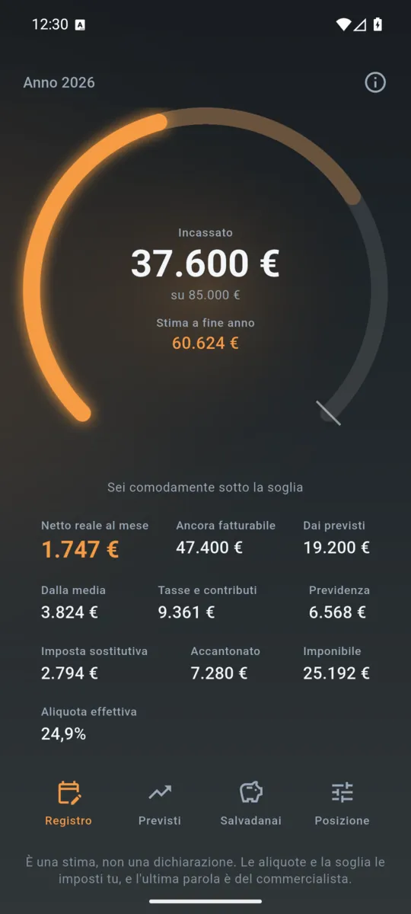
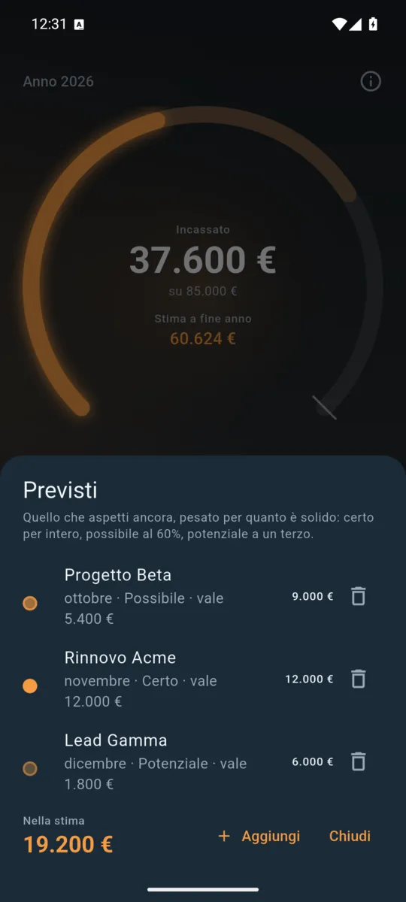
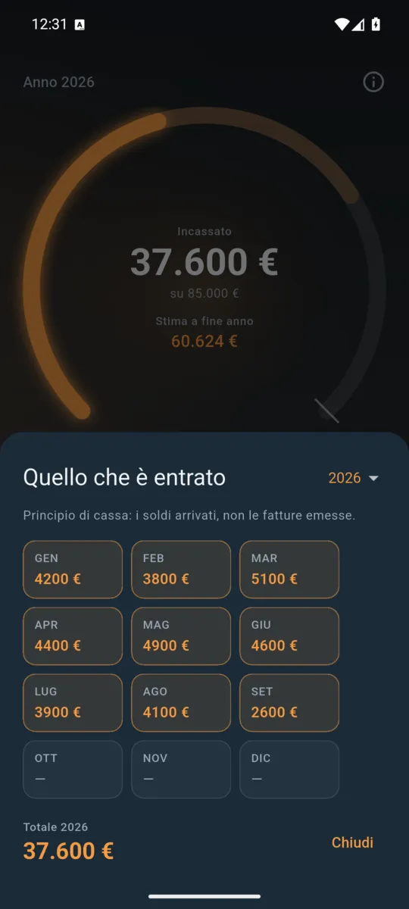
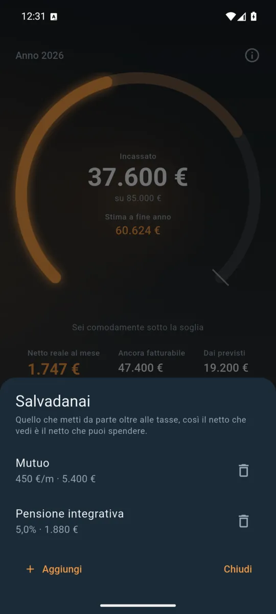

ItalianoEnglish
Plafond dice a un forfettario le due cose che gli servono davvero: quanto manca alla soglia degli 85.000 € e quanto gli resta ogni mese da spendere. Il resto — dichiarazioni, fatture, scadenzari — non è affar suo.

L’arco pieno è quello che hai incassato. Quello sfumato è dove finisce l’anno. 
Gli incassi previsti, pesati: certo, possibile, potenziale. 
Dodici importi, uno per mese: i soldi arrivati, non le fatture emesse. 
Quello che accantoni da solo esce dal netto: è quello che conta davvero.
La soglia, a colpo d'occhio
L'arco pieno è quello che hai incassato. Quello sfumato dietro è dove finisce l'anno se continua così. Colore e spessore cambiano insieme alla stima: un anno che si stringe si vede prima ancora di leggere una cifra.
Il netto che puoi spendere
Non solo l'imposta sostitutiva e i contributi. Anche quello che accantoni da solo — il mutuo, la pensione integrativa, l'assicurazione — perché il netto che conta è quello che resta dopo le promesse che hai già fatto.
Incassi previsti, pesati
Segna quello che aspetti e quanto è solido: certo, possibile, potenziale. La stima conta un lavoro firmato per intero, un possibile al 60% e un potenziale a un terzo, e lascia alla tua media i mesi di cui non sa niente. Un muro di «forse» non ti sposta la ghiera come un contratto.
Le aliquote sono tue
Coefficiente di redditività, imposta sostitutiva al 5% o al 15%, gestione separata o commercianti e artigiani, quota fissa, minimale, riduzione del 35% e perfino la soglia: sono impostazioni con un valore di partenza, non costanti. Le muove la legge di bilancio, e le muovi tu.
Cosa non fa
Niente account. Niente registrazione. Niente server. Nessun permesso: i tuoi importi restano dove li hai scritti, e l'app funziona identica in aereo. Il registro è a principio di cassa — dodici importi, uno per mese, i soldi arrivati e non le fatture emesse — perché è così che si tassa il forfettario.
Ed è una stima per orientarsi, non una dichiarazione dei redditi: l'ultima parola resta al tuo commercialista.
Dove trovarla
Non è ancora su Google Play. Quando ci sarà, il collegamento comparirà qui.